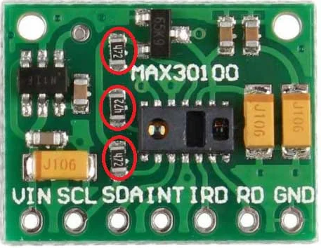
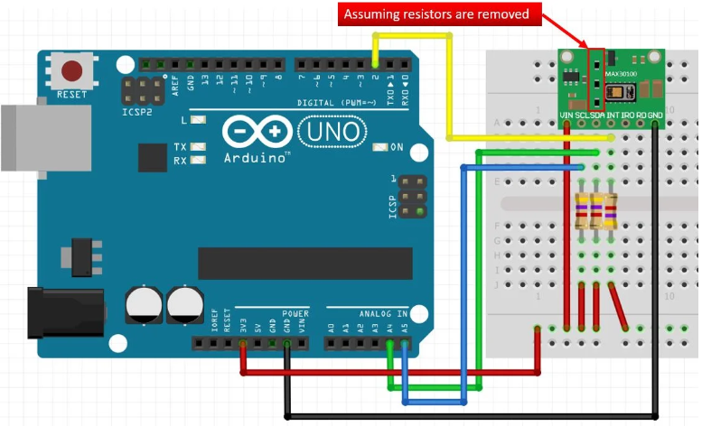

This tutorial will guide you through building a pulse oximeter using the Arduino Nano and the MAX30100 sensor. The project will enable you to monitor heart rate and blood oxygen saturation (SpO₂) levels, displaying the readings on a local webpage.
Components Used
Arduino Nano/UNO
MAX30100 Pulse Oximeter Sensor
USB Cable for Arduino
Breadboard and Jumper Wires
Resistors (3x4.7kOhm)
Important Note
If you are using the MAX30100 sensor with resistors, make sure to remove them before connecting to the Arduino. This ensures that the sensor operates correctly.

Driver Installation
Arduino IDE
The necessary drivers needed for the SpO2 readings webpage to work can be installed simultaneously and automatically with the successful installation of the official Arduino IDE.
Identifying the Correct Port
When you connect your Arduino to your computer, it should show up as a COM port (like COM3 on Windows) or /dev/ttyUSB0 (on Linux). Here’s how to ensure you’re selecting the right port:
For Windows
Open Device Manager (right-click on the Start button and select Device Manager).
Look under the "Ports (COM & LPT)" section. You should see something like "Arduino Nano (COM3)".
Make a note of the COM port number (e.g., COM3) to use it in your code.
For Linux
Open a terminal window.
Run the following command to list connected devices:
ls /dev/tty*
You should see a device listed as /dev/ttyUSB0 (or similar). This is your Arduino.
Make a note of this port for your code.
Setup Instructions
Connect the MAX30100 sensor to the Arduino as follows:
VCC to 5V
GND to GND
SDA to A4
SCL to A5
Download the Arduino IDE and upload the Arduino code that uses the MAX30100 library (Found in example sketches after install MAX30100 library) to read heart rate and SpO₂ values. If you are a complete beginner and want to start learning about Arduino from scratch then I would suggest you watch this youtube video from freeCodeCamp which helped me a lot in the beggining of my electronics journey.
Once the code is uploaded, connect the Arduino to your computer via USB.
Open the local webpage (Link can be found below) you created to visualize the readings.
Note: Works only on select browsers which support serial port monitoring (Brave, Chrome, Microsoft Edge)

Accessing Readings
On the webpage, click the "Connect to Pulse Oximeter" button. This will open a dialog to select the appropriate COM port for your Arduino. Once connected, the heart rate and SpO₂ readings will be displayed in real-time.
Conclusion
This project is a great way to learn about sensors, microcontrollers, and web development. You can expand this project by adding more features like data logging or visualizing trends over time. You can now visit the real-time readings page by clicking the button below.